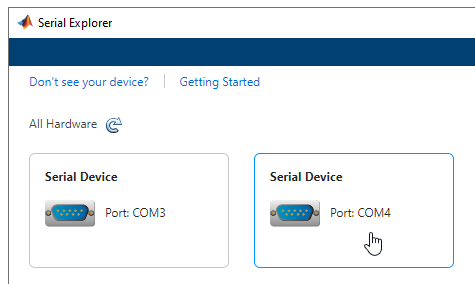

Troubleshooting Serial Port Interface
Serial communication is a low-level protocol for communicating between two or more devices. Normally, one device is a computer, and the other device can be another computer, modem, printer, or scientific instrument such as an oscilloscope or a function generator.
The serial port sends and receives bytes of information in a serial fashion — 1 bit at a time. These bytes are transmitted using either a binary format or a text (ASCII) format.
For many serial port applications, you can communicate with your instrument without detailed knowledge of how the serial port works. Communication is established through a serial port object, which you create in the MATLAB® workspace.
Issue
If you are having trouble connecting to or communicating with your serial port device, follow these troubleshooting steps. All of these steps also apply for troubleshooting the Serial Explorer app.
Possible Solutions
Supported Platforms
The serial port interface is supported on these platforms:
Linux® 64-bit
macOS 64-bit
Microsoft® Windows® 64-bit
The serial port interface is supported on the same platforms as MATLAB. For updates to the list of currently supported platforms, see System Requirements for MATLAB.
Note
RS-232 is not supported on macOS 13 or later.
Adaptor Requirements
Use RS-232 interface standard with the serial port communication. Over the years, several serial port interface standards for connecting computers to peripheral devices have been developed. These standards include RS-232, RS-422, and RS-485 — all of which are supported by the serial port object. Of these, the most widely used standard is RS-232, which stands for Recommended Standard number 232.
You need to connect the two devices with a serial cable. For more information, see Connecting Two Devices with a Serial Cable.
Serial ports consist of two signal types: data signals and control signals. To support these signal types, as well as the signal ground, the RS-232 standard defines a 25-pin connection. However, most PCs and UNIX® platforms use a 9-pin connection. In fact, only three pins are required for serial port communications: one for receiving data, one for transmitting data, and one for the signal ground. For more information, see Serial Port Signals and Pin Assignments.
Configuration and Connection
Make sure that you have the correct instrument driver installed for your device. Refer to your device documentation and the vendor website.
Make sure that your device is supported in Instrument Control Toolbox™. See Is My Hardware Supported? (Instrument Control Toolbox).
Make sure that MATLAB recognizes your serial ports, by using the
serialportlistfunction. For example, if your computer has more than one serial port, your output looks like the following.serialportlist
ans = 1×3 string array "COM1" "COM3" "COM4"If you are using the Serial Explorer app, your available serial ports are displayed when you launch the app.

You can also use Windows Device Manager to see a list of available serial ports.
For macOS machines, use the System Profiler to make sure that your device appears as a serial connection. If it is not present in System Profiler,
serialportlistwill not display it either.Make sure you can create your serial port object. You must provide two arguments to create the object. For example, create a serial object called
susing portCOM1and baud rate9600.s = serialport("COM1",9600);If you do not get an error, the object was created successfully.
When you have connected, you can communicate with your device. If you have problems sending or receiving, you may need to configure communication settings such as
BaudRate,DataBits,Parity,StopBits, orTerminator. Make sure you configure these communication parameters to match those of the connected device.See Writing and Reading Text Data and Writing and Reading Binary Data for communication examples.
Verify Port
Verify that the serial (COM) port is listed in Windows Control Panel > Device Manager > Ports.
Sending and Receiving
If you have problems sending or receiving, you may need to configure communication
settings such as BaudRate, DataBits,
Parity, StopBits, or Terminator.
Make sure you configure these communication parameters to match those of the connected
device.
VISA-Serial Communication
For serial communication, you can also use VISA-Serial with a VISA resource name, as
defined in a VISA vendor utility, such as Keysight Connection Expert. Use the
visadev interface or VISA Explorer app with a VISA-Serial
resource name instead of the serialport interface or Serial
Explorer app.
Note
You must have Instrument Control Toolbox installed to use visadev or VISA
Explorer.
Third-Party Software
For troubleshooting serial port communication, you can also use a third-party serial communication software, such as PuTTY or Tera Term, to isolate the issue.
Incorrect Data Type
Make sure the correct data type—for example int16,
uint16, double—is being used with
read and write. Use the same data type as the
instrument. If reading and writing data types other than uint8 or
int8, make sure the ByteOrder is correct.
See Also
serialport | serialportlist | Serial Explorer